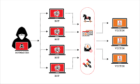

A distributed denial-of-service (DDoS)
A distributed denial-of-service (DDoS) attack is a malicious attempt to disrupt the normal traffic of a targeted
server, service or network by overwhelming the target or its surrounding infrastructure with a flood of Internet
traffic.
.png)
DDOS Attack Meaning
DDoS Attack means "Distributed Denial-of-Service (DDoS) Attack" and it is a cybercrime in which the attacker floods
a server with internet traffic to prevent users from accessing connected online services and sites.
Motivations for carrying out a DDoS vary widely, as do the types of individuals and organizations eager to
perpetrate this form of cyberattack. Some attacks are carried out by disgruntled individuals and hacktivists wanting
to take down a company's servers simply to make a statement, have fun by exploiting cyber weakness, or express
disapproval.
Other distributed denial-of-service attacks are financially motivated, such as a competitor disrupting or shutting
down another business's online operations to steal business away in the meantime. Others involve extortion, in which
perpetrators attack a company and install hostageware or ransomware on their servers, then force them to pay a large
financial sum for the damage to be reversed.
DDoS attacks are on the rise, and even some of the largest global companies are not immune to being "DDoS'ed". The
largest attack in history occurred in February 2020 to none other than Amazon Web Services (AWS), overtaking an
earlier attack on GitHub two years prior. DDoS ramifications include a drop in legitimate traffic, lost business,
and reputation damage.
As the Internet of Things (IoT) continues to proliferate, as do the number of remote employees working from home,
and so will the number of devices connected to a network. The security of each IoT device may not necessarily keep
up, leaving the network to which it is connected vulnerable to attack. As such, the importance of DDoS protection
and mitigation is crucial.
